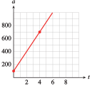
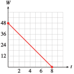
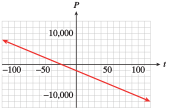
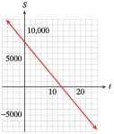
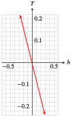

The starting value, or the value of \(y\) at \(x = 0\text{,}\) is the \(y\)-intercept of the graph, and the rate of change is the slope of the graph. Thus, we can write the equation of a line as
\begin{equation*}
\blert{f (x) = b + mx}
\end{equation*}
where the constant term, \(b\text{,}\) is the \(y\)-intercept of the line, and \(m\text{,}\) the coefficient of \(x\text{,}\) is the slope of the line. This form for the equation of a line is called the slope-intercept form.
Slope-Intercept Form.
If we write the equation of a linear function in the form,
\begin{equation*}
f (x) = b + mx
\end{equation*}
then \(m\) is the slope of the line, and \(b\) is the \(y\)-intercept.
(You may have encountered the slope-intercept equation in the equivalent form \(y = mx + b\text{.}\))
For example, consider the two linear functions and their graphs shown below.
\(f (x) = 10 - 3x\)
\(\hphantom{00}x\hphantom{00}\)
\(\hphantom{0}f(x)\hphantom{0}\)
\(0\)
\(10\)
\(1\)
\(7\)
\(2\)
\(4\)
\(3\)
\(1\)
\(4\)
\(-2\)
\(g(x) = -3+2x\)
\(\hphantom{00}x\hphantom{00}\)
\(\hphantom{0}f(x)\hphantom{0}\)
\(0\)
\(-3\)
\(1\)
\(-1\)
\(2\)
\(1\)
\(3\)
\(3\)
\(4\)
\(5\)
Some observations:
We can see that the \(y\)-intercept of each line is given by the constant term, \(b\text{.}\)
By examining the table of values, we can also see why the coefficient of \(x\)gives the slope of the line:
For \(f (x)\text{,}\) each time \(x\) increases by \(1\) unit, \(y\) decreases by \(3\) units.
For \(g(x)\text{,}\) each time \(x\) increases by \(1\) unit, \(y\) increases by \(2\) units.
For each graph, the coefficient of \(x\) is a scale factor that tells us how many units \(y\) changes for \(1\) unit increase in \(x\text{.}\) But that is exactly what the slope tells us about a line.
Example1.124.
Francine is choosing an Internet service provider. She paid $30 for a modem, and she is considering three companies for service:
Juno charges $14.95 per month,
ISP.com charges $12.95 per month,
and peoplepc charges $15.95 per month.
Match the graphs in the figure to Francine’s Internet cost with each company.
Francine pays the same initial amount, $30 for the modem, under each plan. The monthly fee is the rate of change of her total cost, in dollars per month. We can write a formula for her cost under each plan.
The graphs of these three functions all have the same \(y\)-intercept, but their slopes are determined by the monthly fees. The steepest graph, III, is the one with the largest monthly fee, peoplepc, and ISP.com, which has the lowest monthly fee, has the least steep graph, I.
Checkpoint1.125.Practice 1.
Delbert decides to use DSL for his Internet service. Earthlink charges a $99 activation fee and $39.95 per month, DigitalRain charges $50 for activation and $34.95 per month, and FreeAmerica charges $149 for activation and $34.95 per month.
Write a formula for Delbert’s Internet costs under each plan.
Earthlink: \(f(x)=\)
DigitalRain: \(g(x)=\)
FreeAmerica: \(h(x)=\)
Match Delbert’s Internet cost under each company with its graph shown above.
In the equation \(f (x) = b + mx\text{,}\) we call \(m\) and \(b\) parameters. Their values are fixed for any particular linear equation; for example, in the equation \(y = 3+2x\text{,}\)\(b=3\) and \(m=2\text{,}\) and the variables are \(x\) and \(y\text{.}\) By changing the values of \(m\) and \(b\text{,}\) we can write the equation for any line except a vertical line. The collection of all linear functions \(f(x) = b + mx\) is called a two-parameter family of functions.
Checkpoint1.128.Pause and Reflect.
Explain why the initial value for a linear model is often given by the \(y\)-intercept.
SubsectionSlope-Intercept Method of Graphing
Look again at the lines in the previous figure: There is only one line that has a given slope and passes through a particular point. That is, the values of \(m\) and \(b\) determine the particular line. The value of \(b\) gives us a starting point, and the value of \(m\) tells us which direction to go to plot a second point. Thus, we can graph a line given in slope-intercept form without having to make a table of values.
Example1.129.
Write the equation \(4x - 3y = 6\) in slope-intercept form.
We solve the equation for \(y\) in terms of \(x\text{.}\)
\begin{equation*}
\begin{aligned}[t]
-3y \amp =6 - 4x \amp \amp \blert{\text{Divide both sides by } -3}\\
y \amp = \frac{6 - 4x}{-3}=\frac{6}{-3}+\frac{-4x}{-3}\\
y \amp = -2+\frac{4}{3}x
\end{aligned}
\end{equation*}
We see that the slope of the line is \(m = \dfrac{4}{3}\) and its \(y\)-intercept is \(b = -2\text{.}\) We begin by plotting the \(y\)-intercept, \((0, -2)\text{.}\) We then use the slope to find another point on the line. We have
\begin{equation*}
m = \frac{\Delta y}{\Delta x}=\frac{4}{3}
\end{equation*}
so starting at \((0, -2)\text{,}\) we move \(4\) units in the \(y\)-direction and \(3\) units in the \(x\)-direction, to arrive at the point \((3, 2)\text{.}\) Finally, we draw the line through these two points.
Note1.130.
The slope of a line is a ratio and can be written in many equivalent ways. In Example 1.129, the slope is equal to \(\dfrac{8}{6}\text{,}\)\(\dfrac{12}{9}\text{,}\) and \(\dfrac{-4}{-3}\text{.}\) We can use any of these fractions to locate a third point on the line as a check. If we use \(m = \dfrac{\Delta y}{\Delta x}= \dfrac{-4}{-3}\text{,}\) we move down \(4\) units and left \(3\) units from the \(y\)-intercept to find the point \((-3, -6)\) on the line.
Slope-Intercept Method for Graphing a Line.
Plot the \(y\)-intercept \((0, b)\text{.}\)
Use the definition of slope to find a second point on the line: Starting at the \(y\)-intercept, move \(\Delta y\) units in the \(y\)-direction and \(\Delta x\) units in the \(x\)-direction. Plot a second point at this location.
Use an equivalent form of the slope to find a third point, and draw a line through the points.
Checkpoint1.131.Practice 2.
Write the equation \(2y + 3x + 4 = 0\) in slope-intercept form.
We can also use the slope-intercept form to find the equation of a line from its graph. First, we note the value of the \(y\)-intercept from the graph, and then we calculate the slope using two convenient points.
The line crosses the \(y\)-axis at the point \((0, 3200)\text{,}\) so the \(y\)-intercept is \(3200\text{.}\) To calculate the slope of the line, we locate another point, say \((20, 6000)\text{,}\) and compute:
We can read the \(y\)-intercept from the graph, so \(b = 80\text{.}\) Another point is \((20,30)\text{,}\) and from those two points we can compute the slope \(m =\dfrac{-5}{2}\text{.}\) So the slope-intercept form for the equation of the line is \(y = 80 - \dfrac{5}{2}x\)
Checkpoint1.135.Pause and Reflect.
How can you find the equation of a line from its graph?
SubsectionPoint-Slope Form
We can find the equation for a line if we know its slope and \(y\)-intercept. What if we do not know the \(y\)-intercept, but instead know some other point on the line? There is only one line that passes through a given point and has a given slope, so we should be able to find its equation.
For example, we can graph the line of slope \(\dfrac{-3}{4}\) that passes through the point \((1, -4)\text{.}\) We first plot the given point, \((1, -4)\text{,}\) as shown in the figure below.
Then we use the slope to find another point on the line. The slope is
\begin{equation*}
m =\frac{-3}{4}= \frac{\Delta y}{\Delta x}
\end{equation*}
so we move down \(3\) units and then \(4\) units to the right, starting from \((1, -4)\text{.}\) This brings us to the point \((5, -7)\text{.}\) We can then draw the line through these two points.
We can also find an equation for the line, as shown in Example 1.136.
Example1.136.
Find an equation for the line that passes through \((1, -4)\) and has slope \(\dfrac{-3}{4}\text{.}\)
\begin{equation*}
m = \frac{y_2 - y_1}{x_2 - x_1}
\end{equation*}
We substitute \(\dfrac{-3}{4}\) for the slope, \(m\text{,}\) and \((1, -4)\) for \((x_1, y_1)\text{.}\) For the second point, \((x_2, y_2)\text{,}\) we use the variable point \((x, y)\text{.}\) Substituting these values into the slope formula gives us
When we use the slope formula in this way to find the equation of a line, we substitute a variable point \((x, y)\) for the second point. This version of the formula,
\begin{equation*}
m = \frac{y - y_1}{x - x_1}
\end{equation*}
is called the point-slope form for a linear equation. It is sometimes stated in another form obtained by clearing the fraction to get
\begin{equation*}
\begin{aligned}[t]
\alert{(x-x_1)}m\amp
=\frac{y -y_1}{x - x_1}\alert{(x-x_1)} \amp\amp
\blert{\text{Multiply both sides by }(x - x_1)}\\
(x - x_1) m\amp=y-y_1 \amp\amp\blert{\text{Clear fractions and solve for }y\text{.}}\\
y\amp=y_1+m(x-x_1)
\end{aligned}
\end{equation*}
Point-Slope Form.
The equation of the line that passes through the point \((x_1, y_1)\) and has slope \(m\) is
The point-slope form is useful for modeling linear functions when we don’t know the initial value but do know some other point on the line.
Example1.139.
Under a proposed graduated income tax system, single taxpayers would owe $1500 plus 20% of the amount of their income over $13,000. (For example, if your income is $18,000, you would pay $1500 plus 20% of $5000.)
Complete the table of values for the tax, \(T\text{,}\) on various incomes, \(I\text{.}\)
\(I\)
\(15,000\)
\(20,000\)
\(22,000\)
\(T\)
Write a linear equation in point-slope form for the tax, \(T\text{,}\) on an income \(I\text{.}\)
On an income of $15,000, the amount of income over $13,000 is $15,000 - $13,000 = $2000, so you would pay $1500 plus 20% of $2000, or
\begin{equation*}
T = 1500 + 0.20(2000) = 1900
\end{equation*}
You can compute the other function values in the same way.
\(I\)
\(15,000\)
\(20,000\)
\(22,000\)
\(T\)
\(1900\)
\(2900\)
\(3300\)
On an income of \(I\text{,}\) the amount of income over $13,000 is \(I - \$13,000\text{,}\) so you would pay $1500 plus 20% of \(I - 13,000\text{,}\) or
\begin{equation*}
T = 1500 + 0.20 (I - 13,000)
\end{equation*}
Simplify the right side of the equation to get
\begin{equation*}
\begin{aligned}[t]
T \amp = 1500 + 0.20I - 2600\\
T \amp = -1100 + 0.20I
\end{aligned}
\end{equation*}
Checkpoint1.140.Practice 5.
A healthy weight for a young woman of average height, 64 inches, is 120 pounds. To calculate a healthy weight for a woman taller than 64 inches, add 5 pounds for each inch of height over 64.
Write a linear equation in point-slope form for the healthy weight, \(W\text{,}\) for a woman of height, \(H\text{,}\) in inches.
Explain the difference between the slope-intercept form and the point-slope form for a linear equation.
SubsectionSection Summary
SubsubsectionVocabulary
Look up the definitions of new terms in the Glossary.
Slope-intercept form
Point-slope form
Parameter
SubsubsectionCONCEPTS
Linear functions form a two-parameter family, \(f (x) = b + mx\text{.}\)
The initial value of a linear function and the \(y\)-intercept of its graph are given by \(b\text{.}\) The rate of change of the function and the slope of its graph are given by \(m\text{.}\)
The slope-intercept form, \(y = b + mx\text{,}\) is useful when we know the initial value and the rate of change.
The point-slope form, \(y = y_1 + m(x - x_1)\text{,}\) is useful when we know the rate of change and one point on the line.
SubsubsectionSTUDY QUESTIONS
How can you put a linear equation into slope-intercept form?
What do the coefficients in the slope-intercept form tell you about the line?
Explain how to graph a line using the slope-intercept method.
Explain how to find an equation for a line from its graph.
Explain how to use the point-slope form for a linear equation.
Francine says that the slope of the line \(y = 4x - 6\) is \(4x\text{.}\) Is she correct? Explain your answer
Delbert says that the slope of the line \(3x - 4y = 8\) is \(3\text{.}\) Is he correct? Explain your answer.
SubsubsectionSKILLS
Practice each skill in the Homework problems listed.
Write a linear equation in slope-intercept form: #1–14
Identify the slope and \(y\)-intercept: #1–10
Graph a line by the slope-intercept method: #11–14
Find a linear equation from its graph: #21–26, 29–32, 53–56
Interpret the slope and \(y\)-intercept: #21–28, 63 and 64
Find a linear equation from one point and the slope: #33–50
ExercisesHomework 1.5
Exercise Group.
In Problems 1–10,
Write each equation in slope-intercept form.
State the slope and \(y\)-intercept of the line.
1.
\(3x + 2y = 1\)
2.
\(5x - 4y = 0\)
3.
\(\dfrac{1}{4}x + \dfrac{3}{2}y = \dfrac{1}{6}\)
4.
\(\dfrac{7}{6}x - \dfrac{2}{9}y = 3\)
5.
\(4.2x - 0.3y = 6.6\)
6.
\(0.8x + 0.004y = 0.24\)
7.
\(y + 29 = 0\)
8.
\(y - 37 = 0\)
9.
\(250x + 150y = 2450\)
10.
\(80x - 360y = 6120\)
Exercise Group.
In Problems 11–14,
Sketch by hand the graph of the line with the given slope and \(y\)-intercept.
Write an equation for the line.
Find the \(x\)-intercept of the line.
11.
\(m = 3\) and \(b = -2\)
12.
\(m = -4\) and \(b = 1\)
13.
\(m =-\dfrac{5}{3} \) and \(b = -6\)
14.
\(m = \dfrac{3}{4}\) and \(b = -2\)
15.
The point \((2, -1)\) lies on the graph of \(f (x) = -3x + b\text{.}\) Find \(b\text{.}\)
16.
The point \((-3, -8)\) lies on the graph of \(f (x) =\dfrac{2}{3} x + b\text{.}\) Find \(b\text{.}\)
17.
The point \((8, -5)\) lies on the graph of \(f(x) = mx - 3\text{.}\) Find \(m\text{.}\)
18.
The point \((-5, -6)\) lies on the graph of \(f(x) = mx +2\text{.}\) Find \(m\text{.}\)
19.
Find the slope and intercepts of the line \(Ax + By = C\)
20.
Find the slope and intercepts of the line \(\dfrac{x}{a}+\dfrac{y}{b}=1 \)
Exercise Group.
In Problems 21–26,
Find a formula for the function whose graph is shown.
Say what the slope and the vertical intercept tell us about the problem.
21.
The graph shows the altitude, \(a\) (in feet), of a skier \(t\) minutes after getting on a ski lift.

22.
The graph shows the distance, \(d\) (in meters), traveled by a train \(t\) seconds after it passes an observer.
23.
The graph shows the amount of garbage, \(G\) (in tons), that has been deposited at a dump site \(t\) years after new regulations go into effect.
24.
The graph shows the number of barrels of oil, \(B\text{,}\) that has been pumped at a drill site \(t\) days after a new drill is installed.
25.
The graph shows the amount of money, \(M\) (in dollars), in Tammy’s bank account \(w\) weeks after she loses all sources of income.
26.
The graph shows the amount of emergency water, \(W\) (in liters), remaining in a southern California household \(t\) days after an earthquake.

27.
The formula \(F = \dfrac{9}{5}C + 32\) defines a function that converts the temperature in degrees Celsius to degrees Fahrenheit.
What is the Fahrenheit temperature when it is \(10\degree\) Celsius?
What is the Celsius temperature when it is \(-4\degree\) Fahrenheit?
Choose appropriate WINDOW settings and graph the equation \(y = \dfrac{9}{5}x + 32\text{.}\)
Find the slope and explain its meaning for this problem.
Find the intercepts and explain their meanings for this problem.
28.
If the temperature on the ground is \(70\degree\) Fahrenheit, the formula \(T = 70 - \dfrac{3}{820}h\) defines a function that gives the temperature at an altitude of \(h\) feet.
What is the temperature at an altitude of \(4100\) feet?
At what altitude is the temperature \(34\degree\) Fahrenheit?
Choose appropriate WINDOW settings and graph the equation \(y = 70- \dfrac{3}{820}x\text{.}\)
Find the slope and explain its meaning for this problem.
Find the intercepts and explain their meanings for this problem.
29.
In England, oven cooking temperatures are often given as Gas Marks rather than degrees Fahrenheit. The table shows the equivalent oven temperatures for various Gas Marks.
Gas Mark
\(3\)
\(5\)
\(7\)
\(9\)
Degrees (F)
\(325\)
\(375\)
\(425\)
\(475\)
Plot the data and draw a line through the data points.
Calculate the slope of your line. Estimate the \(y\)-intercept from the graph.
Find an equation that gives the temperature in degrees Fahrenheit in terms of the Gas Mark.
30.
European shoe sizes are scaled differently than American shoe sizes. The table shows the European equivalents for various American shoe sizes.
American shoe size
\(5.5\)
\(6.5\)
\(7.5\)
\(8.5\)
European shoe size
\(37\)
\(38\)
\(39\)
\(40\)
Plot the data and draw a line through the data points.
Calculate the slope of your line. Estimate the \(y\)-intercept from the graph.
Find an equation that gives the European shoe size in terms of American shoe size.
31.
A spring is suspended from the ceiling. The table shows the length of the spring in centimeters as it is stretched by hanging various weights from it.
Weight, kg
\(3\)
\(4\)
\(8\)
\(10\)
\(12\)
\(15\)
\(22\)
Length, cm
\(25.76\)
\(25.88\)
\(26.36\)
\(26.6\)
\(26.84\)
\(27.2\)
\(28.04\)
Plot the data on graph paper and draw a straight line through the points. Estimate the \(y\)-intercept of your graph.
Find an equation for the line.
If the spring is stretched to \(27.56\) cm, how heavy is the attached weight?
32.
The table shows the amount of ammonium chloride salt, in grams, that can be dissolved in \(100\) grams of water at different temperatures.
Temperature, \(\degree\)C
\(10\)
\(12\)
\(15\)
\(21\)
\(25\)
\(40\)
\(52\)
Grams of salt
\(33\)
\(34\)
\(35.5\)
\(38.5\)
\(40.5\)
\(48\)
\(54\)
Plot the data on graph paper and draw a straight line through the points. Estimate the \(y\)-intercept of your graph.
Find an equation for the line.
At what temperature will \(46\) grams of salt dissolve?
Exercise Group.
In Problems 33–36,
Sketch by hand the graph of the line that passes through the given point and has the given slope.
Write an equation for the line in point-slope form.
Put your equation from part (b) into slope-intercept form.
33.
\((2, -5)\text{;}\)\(m = -3\)
34.
\((-6, -1)\text{;}\)\(m = 4\)
35.
\((2, -1)\text{;}\)\(m =\dfrac{5}{3} \)
36.
\((-1, 2)\text{;}\)\(m =-\dfrac{3}{2} \)
Exercise Group.
For Problems 37–40,
Write an equation in point-slope form for the line that passes through the given point and has the given slope.
Put your equation from part (a) into slope-intercept form.
Use your graphing calculator to graph the line.
37.
\((-6.4, -3.5)\text{,}\)\(m =-0.25 \)
38.
\((7.2, -5.6)\text{,}\)\(m =1.6 \)
39.
\((80, -250)\text{,}\)\(m =2.4 \)
40.
\((-150, 1800)\text{,}\)\(m =-24 \)
Exercise Group.
For Problems 41 and 42,
Find the slope of the line. (Note that not all the labeled points lie on the line.)
Find an equation for the line.
41.

42.

Exercise Group.
For Problems 43 and 44, the equation of line \(l_1\) is \(y = q + px\text{,}\) and the equation of line \(l_2\) is \(y = v + tx\text{.}\)
Decide whether the coordinates of each labeled point are
a solution of \(y = q + px\text{,}\)
a solution of \(y = v + tx\text{,}\)
a solution of both equations, or
a solution of neither equation.
Find \(p\text{,}\)\(q\text{,}\)\(t\text{,}\) and \(v\text{.}\)
43.
44.
Exercise Group.
For Problems 45–50,
Estimate the slope and vertical intercept of each line. (Hint: To calculate the slope, find two points on the graph that lie on the intersection of grid lines.)
Using your estimates from (a), write an equation for the line.
45.
46.
47.

48.

49.
50.

51.
Write equations for three lines with slope \(m = \dfrac{3}{4}\text{.}\) (Many answers are possible.)
Graph all three lines in the same window. What do you notice about the lines?
52.
Write equations for three lines with slope \(m =0\text{.}\) (Many answers are possible.)
Graph all three lines in the same window. What do you notice about the lines?
Exercise Group.
In Problems 53–56, choose the correct graph for each equation. The scales on both axes are the same.
53.
\(\displaystyle y = \dfrac{3}{4}x + 2\)
\(\displaystyle y = \dfrac{-3}{4}x + 2\)
\(\displaystyle y = \dfrac{3}{4}x - 2 \)
\(\displaystyle y =\dfrac{-3}{4}x - 2\)
54.
\(m\lt 0\text{,}\)\(b\gt 0\)
\(m\gt 1\text{,}\)\(b\lt 0\)
\(0\lt m\lt 1\text{,}\)\(b\lt 0\)
\(m\lt -1\text{,}\)\(b\lt 0 \)
55.
\(\displaystyle y = 1 + 2(x+3) \)
\(\displaystyle y = -1 + 2(x-3)\)
\(\displaystyle y = -1 + 2(x+3) \)
\(\displaystyle y = 1 + 2(x-3) \)
56.
\(\displaystyle y = 2 - \dfrac{2}{3}(x - 3) \)
\(\displaystyle y = 2 - \dfrac{3}{2}(x + 3) \)
\(\displaystyle y = 2 + \dfrac{3}{2}(x - 3) \)
\(\displaystyle y = 2 + \dfrac{2}{3}(x + 3) \)
Exercise Group.
In Problems 57–60, find the slope of each line and the coordinates of one point on the line. (No calculation is necessary!)
57.
\(y + 1 = 2(x - 6)\)
58.
\(2(y - 8) = 5(x + 2)\)
59.
\(y = 3 - \dfrac{4}{3}(x + 5)\)
60.
\(7x = -3y\)
61.
Draw a set of coordinate axes with a square grid (i.e., with units the same size in both directions). Sketch four lines through the point (0, 4) with the following slopes:
\begin{equation*}
m = 3, ~~~ m = -3,~~~ m = \frac{1}{3}, ~~~ m =\frac{-1}{3}
\end{equation*}
Draw a set of coordinate axes with a square grid (see Problem 61). Sketch four lines through the point (0, -3) with the following slopes:
\begin{equation*}
m = \frac{2}{5}, ~~~ m = \frac{-2}{5},~~~ m = \frac{5}{2}, ~~~ m =\frac{-5}{2}
\end{equation*}
What do you notice about these lines?
63.
The boiling point of water changes with altitude and is approximated by the formula
\begin{equation*}
B = f (h) = 212 - 0.0018h
\end{equation*}
where \(B\) is in degrees and \(h\) is in feet. State the slope and vertical intercept of the graph, including units, and explain their meaning in this context.
64.
The height of a woman in centimeters is related to the length of her femur (in centimeters) by the formula
\begin{equation*}
H = f (x) = 2.47x + 54.10
\end{equation*}
State the slope and the vertical intercept of the graph, including units, and explain their meaning in this context.